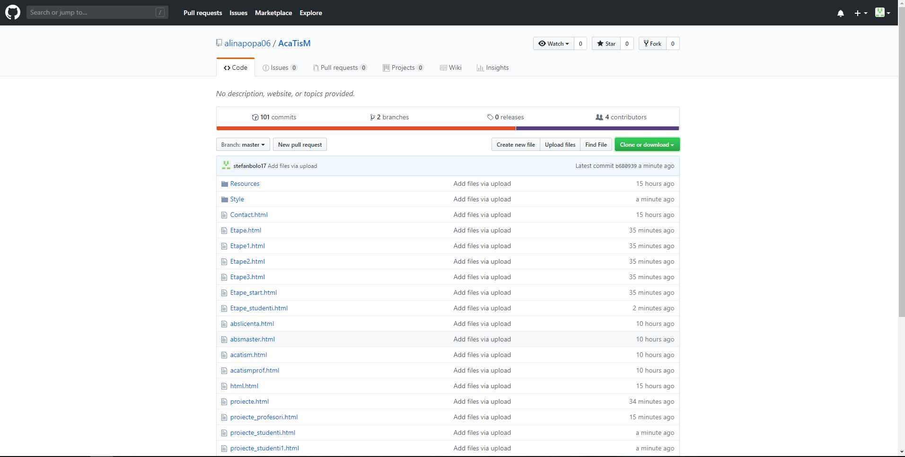

Profilul meu
Licenta
An de studiu: II
Grupa: A3
Etapele mele
Depistarea bibliografiei-schitarea planului
- cursul cu bibliografia orientativa
- profesorul conducator si rolul sau
- investigatia personala
Informarea si documentarea
- întocmirea fisierului propriu de documentare
- clasificarea informatiei
- ierarhizarea informatiei
- încadrarea în context
- formarea unei competente informational-documentare
Intocmirea planului detaliat al lucrarii
- planul se face într-o faza avansata a informarii si documentarii
- cautarea unui model existent
- stabilirea structurii generale a planului (introducere, cuprins/tratare, concluzii/încheiere)
- examinarea critica a datelor cunoscute
Elaborarea primei forme a lucrarii
- alegerea metodelor de lucru si formularea lor
- redactarea propriu-zisa în prima forma
- dezvoltarea aplicatiei
Elaborarea finala a întregii lucrari
- întocmirea foii de titlu
- cuprinsul
- prezentarea externa
Progresul proiectului
- Schitarea planulu
- Documentare
- Intocmirea planului
- Elaborarea initiala
- Elaborarea finala
Editare in git
